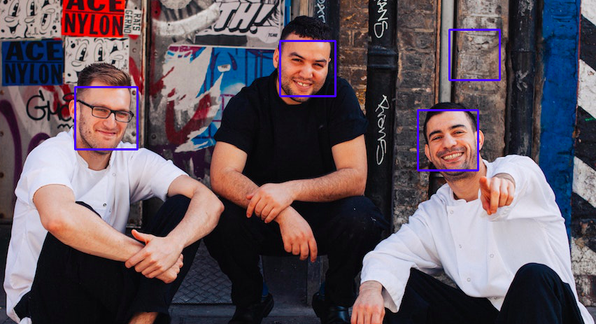
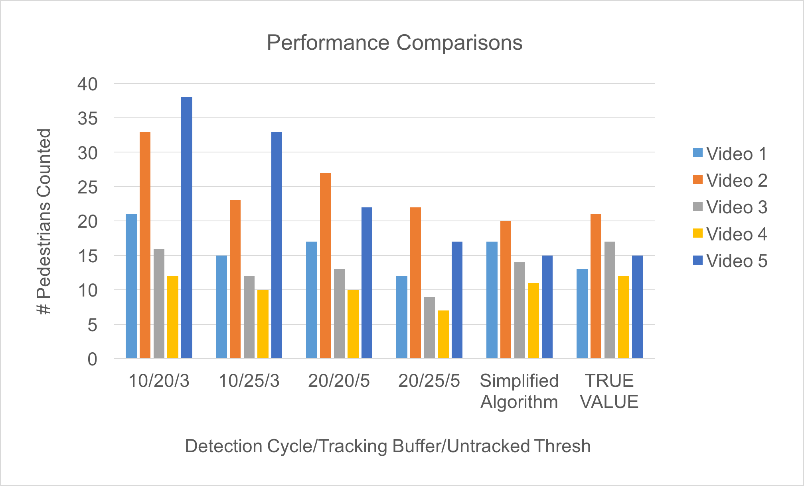
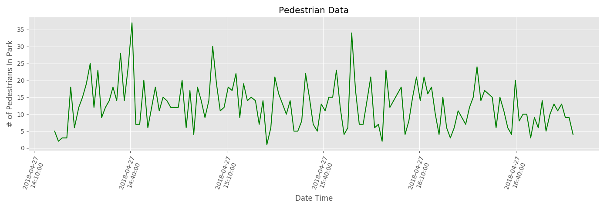

_____________________________
Teaming with the Parks and People Foundation of Baltimore, our team is developing computer vision software for pedestrian detection, with which we hope to accurately collect park usage data.
By collecting and analyzing concrete statistics on pedestrian traffic at the entrances and exits of Druid Hill Park, we hope to demonstrate the abundant usage of the park to the funding department, hence allowing Druid Hill Park to be utilized for the Baltimore community to its best potential.
Through cutting-edge pedestrian detection and tracking algorithms, we are able to analyze live streams and recorded streams and collect the number of people appearing in the video.
Using matplotlib, the pedestrian data collected can be transformed into a live updating graph, that allows for the visualization of park usage activity at varying times of the day, month, year, etc.
The TKinter package was used in order to create a user friendly GUI, which allows for one-click running of the program, and also immediate statistics visualization that can be toggled.
DEVELOPMENT STORY
Follow along our team's development and learning process.
i. PRIMITIVE FUNCTIONS
In order to get acquainted with the OpenCV 3 library, we implemented the built-in face detection functionalities that made use of Haar Cascades. We verified that these detections worked not only on images, but on videos as well – the strategy was to take slices (or frames) of the video and treat each as a separate image. As a result, we did notice some lag in the processing of the image, especially as the dimensions of the input got larger. Thus, we took mental note of the need for a fast algorithm that would be able to keep up with a live stream.
At this point, we also were able to count the number of detections (faces) on the screen – the first step towards the desired functionality. However, as evident from the example performance, accuracy was not perfect.

< Face and eye detection with haar cascades. >
< HOG detection with 10 skip frames. >
ii. BEGINNING PEDESTRIAN DETECTION
Moving on to pedestrian detection, we realized that the Haar Cascade technique is quite the ancient algorithm (almost two decades old), so we moved onto more modern techniques: the HOG (Histogram of Oriented Gradients) detection technique, also implemented in OpenCV. We found that we were able to successfully detect pedestrians using these libraries, but again saw speed issues and accuracy problems. Ideas like running the program on a server, skipping frames between detections to approximately match the live speed were explored. This demo shows a 10 skip frame performance.
iii. TENSORFLOW OBJECT DETECTION MODEL
We installed a Google Nest camera at the entrance area of Druid Hill Park, thus gained access to a livestream. Speed became a very real issue. We discovered that even the HOG technique was not quite up-to-date, and decided to try the TensorFlow library, which had an online learning object detection classifier, trained using SSD (Single Shot Detection) – a cutting-edge detection strategy developed using neural networks, and known to be one of the most accurate and fast detection methods. We saw a decent speed improvement, meaning that skipping frames was no longer necessary, and the idea of processing a live stream became very viable.
Shown is a side by side comparison of speed (both skipping 0 frames) and accuracy of the OpenCV HOG detection and TensorFlow SSD implementation. Both can be seen making plenty of false positives, but the bounding boxes provided by the SSD is tighter, and also provides a score of accuracy, which gives us more control over quality.
Upon speaking to Austin Reiter, we learned the significance of the use of both detection and tracking in our project. Tracking is significantly faster due to the fact that there is context of where to look for the next object, while in detection, every frame is given new, hence the algorithm runs from scratch on every image slice. The key was to find a balance between the two. Also, by simply running detections per frame, we were not collecting any meaningful information across the frames – the detections were independent of each other, and we needed a way to recognize if a detection in one frame corresponded to a detection in the next frame to avoid double counting.
After researching many tracking techniques including TLD, BOOSTING, MIL, KCF, and MEDIANFLOW, we concluded that the KCF (Kernel Correlation Filter) tracking algorithm would work the best for us, with its speed and accuracy, and ability to notify tracking failures (which would hopefully represent a person exiting the screen).
v. IMPROVING DETECTION: BACKGROUND SUBTRACTION
As one side of the team put together the tracking algorithm pieces, the other side worked hard on developing new techiniques to improve the detection itself. This was a crucial part of our project, because even if the tracking algorithm works quickly, without periodic detection, we could never detect new objects in the screen. But also, if the detection runs slow, it creates a terrible bottleneck for the speed of the algorithm, rendering the entire program unusuable for live streams.
This is one of the latest iterations of background subtraction that we have achieved. The detection algorithm being run is the SSD from the TensorFlow library, and the tracking algorithm is KCF. The detection is being run every 50 frames. As can be seen, the detection is not only very slow, but is also unable accurately detect the pedestrians, even with the help of background subtraction.
< SSD detection running on background subtracted video. >
vi. ASSOCIATIONS: THE HUNGARIAN ALGORITHM
< Failed cases with absence of detection associations. >
We understood that the problem with object tracking alone was that the algorithms were not responsible for making any new detections. This meant that with the current code, only detection boxes in the first frame were able to be tracked. Hence introduced the idea of periodically running detections, that is, every nth frame, so that new pedestrians walking in would be able to be tracked as well. The gave rise to the same problem as before: how do we associate previous detections with new detections, ensuring that only new detections are added to the trackers, while old ones simply continue their tracking?
The first two demos show failed examples - in the first, we are using a simple centroid comparison technique, where if the centroids are close enough to each other, the objects are considered the same and does not create a new tracker, but it performs slowly and is not accurate enough. The second video shows an even worse case, where the trackers start accumulating and not disappearing. We also see the problem with hanging trackers. We were also having trouble with the objecct detection cycles, where they would run extremely slow.
Turns out, the Hungarian Algorithm is an association technique that involves matrix algebra in order to compare the centroids of detection boxes (or, ‘bounding boxes’) and find the highest likely pairings between the old and new detection boxes. Thus, using the Munkres package that implements this algorithm, we were able to eliminate many tracker duplications, rid of hanging boxes that resulted from a bad runaway tracker, and also successfully create new trackers for pedestrians that had newly entered the frame. Moreover, we fixed the detection bug in the code. The resulting significant improvement is visible in the following third demo.
< Improved performance with Hungarian Algorithm and tracking buffer (detection_cycle 10, untracked 5) >
vii. TESTING: FLAWS REVEALED
We installed a second camera that oversaw the Johns Hopkins campus, in order to have access to a pedestrian traffic heavy feed. Using these two live feeds and five different videos taken around campus of pedestrians from varying angles, we ran testing on our algorithms to judge accuracy and tweak parameters.
We discovered that the accuracy of our detection + tracking algorithm was not very reliable, performing at an average of about 22% error at best due to double counting problems and tracking failures. Moreover, tracking was providing a lot of extra information that we did not need – all we needed was the fact that people entered the screen, not the in between travel paths. Thus, for the final design for the semester, we elected to choose a simpler approach of using the Hungarian Algorithm to match detections from a single previous frame to the next. This performed at about a 12% error rate, and is labeled as "Simplified Algorithm" in the graph shown.

< Unreliable performance due to tracking failures. >
< Detection + Tracking 20/20/5 on Video 4. >
< Detection + Tracking 10/25/3 on Video 4. >
Here we can see two of the running analyses that ran under the best performing parameters in terms of people count accuracy. The first video is run on parameters of 20 detection cycles, 20 frames of tracking buffer, and 5 unassociations (untracked threshold) allowed. The second video is run on 10 detection cycles, 25 frames of tracking buffer, and 3 unassociations (untracked threshold) allowed. The performances of these videos suffer because of the tracking failures that result from the KCF tracker. Then, when the new detections come in, the trackers successfully restart and hence double or even triple count individuals.
Then, moving to the Simplified "Radical" Algorithm below, there is no longer any tracking - only Hungarian Algorithm comparisons between a single previous frame, and an unassociations threshold. This performs in a significantly more reliable fashion because there are no tracking failures. The lack of a tracker removes the entropy that it adds to the analysis, and thus the values are a lot more accurate.
< Improved accuracy with Simplified "Radical" Algorithm without KCF tracking. >
< On Video 4. >
< On Video 5. >
viii. GUI AND DATA VISUALIZATION
As the final feature of the algorithm, we wanted to package the program into an easily executable and intuitive GUI for the non-programmers who would be interested in using this analysis program. Moreover, for the purpose of this project it was necessary to not only collect the pedestrian data, but also analyze it and plot the “activity” in the feed over time. Thus, we used TKinter to create a GUI, and used the matplotlib package to plot the data that was collected into a CSV file. The graph plotting was coded to be updated in real time, as the analysis ran.

< Analysis of people on screen per minute over 150 min. >
> CONCLUSION <
Object detection and tracking turned out to be a field that was a lot more cutting-edge than expected. Talking to experts in the field revealed that techniques such as SSD and KCF tracking were both considered some of the best techniques to date, but these techniques alone clearly suffered as the performance was unreliable. According to papers, the most successful implementations were capable of reaching such high accuracies by combining together a plethora of techniques, including but not limited to background subtraction, semantic segmentation, Kalman filtering, optical flow, etc. We expect that with more time and a better implementation of the KCF tracker, we would be able to create a successful detection and tracking implementation that performs very well. Strategies include training our own classifier for pedestrians at angles more specific to our use, and also combining a multitude of these techniques to narrow down the search area for detections and tracking, thus removing the opportunity for false positives.
Overall, we found great potential in the project and learned a significant amount of information about computer vision, including its best machine learning techniques, and also the problems that are still trying to be solved. The continuation of this project would definitely bring rise to statistics that are reliable within a very small range of error. For now, however, we believe we successfully proved the feasibility of using live camera data for pedestrian activity analysis, which can be applied to the benefit of the Baltimore City Parks.